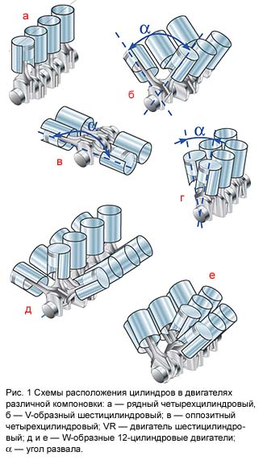
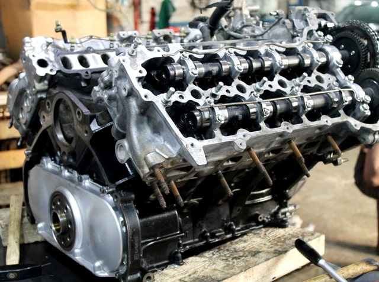

CТО
CТО
Капелла
ВНИМАНИЕ! Мы переехали!!!
Наш новый адрес:
ЧЕСТНЫЙ ремонт автомобилей в Минске в рассрочку.
Ремонт двигателей, замена двигателей. Ремонт ГБЦ, замена прокладки блока цилиндров и клапанной крышки. Замена поршней, колец, вкладышей двигателя. Замена маслосъемных колпачков, свечей накала и свечей зажигания. Замена моторного масла, масляного, воздушного и топливного фильтров. Компьютерная диагностика и многое другое на нашей СТО в центре Минска.
Официальная гарантия на все работы.
ВЫ ПЛАТИТЕ ТОЛЬКО ЗА РЕЗУЛЬТАТ!
Звоните ежедневно
с 9 до 20 часов!
 +375 (33) 600 23 47
+375 (33) 600 23 47
 +375 (29) 627 49 07
+375 (29) 627 49 07
или напишите свой вопрос на Viber
 +375 29 627 49 07
+375 29 627 49 07
 РАССРОЧКА на 6 месяцев!!!
РАССРОЧКА на 6 месяцев!!!
Ремонт авто сегодня, оплата потом!
Оцените нас:
ДВС - двигатель внутреннего сгорания - сердце автомобиля, без которого само понятие "автомобиль" теряет смысл. Это двигатель делает обычную колесную повозку автомобилем, и поэтому, как за любым сердцем, за двигателем требуется должный уход. От исправной работы ДВС зависит практически всё в автомобиле: динамика и плавность движения, комфорт поездки, расход топлива и т.д. Двигатель требует к себе постоянного внимания водителя: нужно следить за уровнем технических жидкостей и масел, периодической заменой фильтров, свечей, ремней, проводов, исправностью электрических приборов и датчиков, следить за напряжением аккумулятора и генератора, и прочими составляющими, которые обеспечивают правильную и надежную работу двигателя автомобиля. И стоит что-нибудь пропустить, по халатности или по незнанию или невнимательности, как мелкая неисправность потянет за собой дорогостоящий ремонт.
Двигатели автомобилей подразделяются:
- по типу потребляемого топлива - бензиновые, дизельные и газовые двигатели. В бензиновых двигателях топливная смесь поступает в цилиндры и в конце такта сжатия воспламеняется от электрической искры свечей зажигания. В дизельных двигателях воспламенение топливно-воздушной смеси происходит от воздействия высокой температуры в результате сжатия. Работа газовых двигателей практически не отличается от работы бензинового двигателя;
- по расположению цилиндров - V-образные, W-образные, VR двигатели, рядные, оппозитные двигатели (рис.1);
- по способу охлаждения - с жидкостным или воздушным охлаждением;
- и по другим, менее значительным, критериям.
Чтобы вовремя определить, что двигатель требует к себе особого внимания надо прислушиваться к нему и знать основные симптомы. Он сам подскажет вам, что пора ехать на диагностику, надо только уметь его слушать. Если Вы не уверены в необходимости ремонта двигателя, то обратите внимание на основные симптомы, говорящие о необходимости обратиться на СТО к специалистам по ремонту ДВС:
- неровная работа двигателя, повышенная детонация, характерные металлические звуки при работе двигателя, тяжелый запуск;
- видимые подтеки на поверхности двигателя, масляные пятна на земле в местах парковки автомобиля;
- повышенный расход моторного масла. Если на 1000 км пробега автомобиль расходует масло до отметки минимум, то это является поводом для проведения диагностики двигателя;
- белый густой или сизый дым, выходящий из выхлопной трубы, также является поводом задуматься о диагностике и ремонте двигателя. Возможно, причиной этому является прогоревшая прокладка ГБЦ (головки блока цилиндров) или трещины в двигателе, в результате чего антифриз попадает в камеру сгорания двигателя, а это не сулит ничего хорошего и если вовремя обратиться на СТО, то можно избежать полного капитального ремонта двигателя;
- существенное увеличение расхода топлива и неровная работа двигателя также повод обратится за диагностикой двигателя.
Помимо этого, необходимо соблюдать сроки и периодичность замены ремня или цепи ГРМ, роликов, водяного насоса (помпы), ремня генератора, свечей, замены моторного масла, трансмиссионного масла, антифриза, топливного и масляного фильтров, воздушного фильтра, проверять герметичность и эластичность патрубков охлаждения и топливных шлангов, работу вентиляторов охлаждения и т.д.
Каждому водителю желательно завести блокнот или сервисную книжку и отмечать когда и чего производилась замена или ремонт в автомобиле. За такое внимание к себе, двигатель отплатит вам долгой и надежной работой, сведя к минимуму ваши затраты на своё обслуживание и ремонт.
Капитальный ремонт двигателя – это комплекс работ по восстановлению старого или поврежденного в результате аварии, разрыва цепи или ремня ГРМ, а так же ввиду иных причин, двигателя до состояния близкого к новому. В процессе капремонта проводятся работы по восстановлению деталей или их замене.

Капремонт двигателя включает в себя пять основных этапов:
- снятие двигателя и его разборка;
- очистка;
- оценка состояния всех узлов и деталей;
- замена или ремонт поврежденных или изношенных деталей и узлов;
- сборка двигателя и установка на автомобиль.
Просчитать заранее стоимость капремонта двигателя практически невозможно. Всё зависит от количества и степени повреждений и изношенности узлов и частей. Поэтому многие СТО, в том числе и наша, называют стоимость проведения капремонта в некотором промежутке от и до определенной суммы, и лишь после разборки и дефектовки двигателя можно более или менее точно оценить объем работ и их стоимость.
О необходимости проведения капремонта двигателя нужно судить не по пробегу автомобиля, а по конкретным признакам, как то:
- значительный перерасход топлива;
- потеря мощности двигателя;
- низкая компрессия в цилиндрах;
- большой перерасход моторного масла;
- стуки и другие посторонние звуки при работе ДВС;
- постоянный перегрев мотора;
- другие признаки неустойчивой работы двигателя.
В большинстве случаев водители сами своим невнимательным отношением доводят двигатель до "капиталки": несвоевременно производят замену масла и фильтров, не следят за уровнем технических жидкостей, экономят на качестве топлива и смазочных материалов, забывают менять ремни ГРМ, что приводит к обрыву ремня и крупной поломке узлов и механизмов двигателя. Так же приближает капремонт двигателя эксплуатация авто на предельных нагрузках и постоянные перегревы двигателя.
Работы по капремонту бензинового или дизельного двигателя, как правило, включают в себя: ремонт и шлифовка головки блока цилиндров, реставрация клапанов или их замена, замена маслосъемных колпачков, восстановление или замена распредвала, устранение трещин, расточка цилиндров, замена поршней и поршневых колец, восстановление постелей каленвала, выравнивание привалочных плоскостей и другие работы.
После осуществления капитального ремонта бензинового или дизельного двигателя нужно некоторое время соблюдать те же правила, что и при обкатке нового автомобиля: прогревать двигатель перед каждой поездкой до рабочей температуры, не ездить на повышенных оборотах, не буксировать прицепы и другие автомобили, стараться не тормозить двигателем. Обкатку нужно производить, не загружая автомобиль и не превышая скорости в 60–70 км/час. Пятую передачу, если она имеется в КПП, в этот период лучше не включать. Первые 500 км для двигателя после капремонта особенно тяжелы. В этот период появление сизого дыма из выхлопной трубы - нормальное явление. Также возможна некоторая нестабильность оборотов холостого хода, которые придется регулировать довольно часто. Точная регулировка обротов двигателя обычно проводится после пробега около 1000 км. После пробега в 2500–3000 км можно увеличить максимальную скорость до 80–90 км/час. После этого пробега можно переходить уже более-менее нормальной эксплуатации, постепенно увеличивая нагрузку к пробегу в 10–15 тыс. км до максимальной. Во время первого периода обкатки (2500–3000 км) желательно два-три раза заменить фильтр и моторное масло. Дело в том, что в этот период в системе будет находиться большое количество продуктов износа. После пробега 2500–3000 км необходимо подтянуть крепление ГБЦ.
Правильная обкатка двигателя после капремонта позволит долго и эффективно эксплуатировать автомобиль без потери времени на внеплановые ремонты. Дальнейший ресурс двигателя, пережившего капремонт, будет зависеть от аккуратности вождения, своевременного обслуживания и качества применяемых эксплуатационных материалов.
Ввиду конструктивных особенностей различных моделей автомобилей цены на выполнение нижеперечисленных работ могут сильно отличаться, поэтому, пожалуйста, уточняйте стоимость той или иной услуги у нашего мастера по телефону, через Viber или посредством отправки запроса по форме внизу этой страницы. Мы рады любому Вашему обращению к нам, а мы постараемся чтобы наши цены и условия оплаты Вас приятно удивили. Если, вдруг, наши цены показались Вам слишком высокими, не стесняйтесь сказать нам об этом и, возможно, нам удастся договориться.
В дополнение к любому ремонту авто мы выполним бесплатную диагностику всей подвески и ходовой части Вашего автомобиля.
Мы занимаемся любым ремонтом и заменой бензиновых и дизельных двигателей легковых автомобилей начиная от простой замены масла и фильтров и заканчивая полной переборкой и ремонтом бензиновых и дизельных двигателей. Капремонт двигателя включает в себя в первую очередь разборку и дефектовку узлов и агрегатов двигателя, чистку двигателя и т.д.
Основной перечень работ по ремонту бензиновых и дизельных двигателей выполняемых на нашей СТО в Минске:
- устранение последствий и ремонт двигателя в результате обрыва цепи или ремня ГРМ;
- компьютерная диагностика двигателя - 10 руб.;
- ремонт ГБЦ, шлифовка;
- замена ремня генератора, замена цепи и ремня ГРМ;
- замена прокладок ГБЦ и клапанной крышки;
- замена двигателя;
- замена маслосъемных колпачков;
- замена свечей накала и зажигания;
- замена поршневых колец, шатунов, поршней, вкладышей;
- расточка или гильзовка блока цилиндров двигателя;
- ремонт коленвала и его постелей;
- замена масла, масляного фильтра, воздушного и топливного фильтров - 15-25 руб.;
и многое другое.
Узнать точную стоимость отдельных видов работ Вы можете заполнив и отправив расположенный ниже запрос или позвонив на указанные номера телефонов
Все необходимые запасные части для осуществления ремонта и замены дизельных и бензиновых двигателей мы можем приобрести самостоятельно и по очень привлекательным ценам, предварительно согласовав их покупку с Вами. Никаких "сюрпризов" в акте выполненных работ по ремонту двигателя Вы не увидите. После вскрытия двигателя мы продемонстрируем Вам все найденные неисправности, и все дальнейшие наши действия по ремонту двигателя согласовываются с Вами. Замененные запчасти при выполнении капитального ремонта двигателя будут предъявлены Вам по окончании работ.
На ВСЕ РАБОТЫ, выполняемые у нас на СТО в Минске, для держателей карт рассрочки "Карта Покупок", "SMARTКарта", "Карта FUN" или "МАГНИТ" действует РАССРОЧКА на 6 месяцев. Если у Вас нет карты рассрочки, то оформить ее можно через интернет в кратчайшие сроки без особых проблем. Ссылки на страницы банков для оформления карт рассрочки Вы найдете на главной странице нашего сайта здесь.
На все выполненные работы по ремонту или замене бензинового или дизельного двигателя Вы получите от нас официальную гарантию. Но даже по ее истечении мы не бросаем своих клиентов и, если гарантийный случай наступил не в результате естественного износа, мы исправим и заменим вышедшие из строя части за свой счет.
Если Вы хотите провести компьютерную диагностику, ремонт или замену бензинового или дизельного двигателя, а также узнать цену отдельных видов работ по ремонту двигателя, то задайте свой вопрос мастеру на  +375 (29) 627-49-07 или оставьте свой номер телефона в поле внизу, и, как только мастер освободится, он перезвонит Вам, ответит на все Ваши вопросы и запишет на диагностику, ремонт или замену двигателя на удобное для Вас время.
+375 (29) 627-49-07 или оставьте свой номер телефона в поле внизу, и, как только мастер освободится, он перезвонит Вам, ответит на все Ваши вопросы и запишет на диагностику, ремонт или замену двигателя на удобное для Вас время.
Вы можете оплатить ремонт или замену двигателя, а так же запчасти использованные при ремонте в РАССРОЧКУ. Условия оплаты ремонта в рассрочку указаны в шапке нашего сайта.
Отправка запроса Вас ни к чему не обязывает. Спрашивайте, мы рады будем Вам ответить!
Заполните поля (модель автомобиля или VIN-номер, способ получения ответа, описание требуемого ремонта) и отправьте запрос.
Ответ с ценой интересующего Вас ремонта и условиями Вы получите через 30-60 минут указанным Вами способом.
Если произошла задержка с получением ответа, то не судите строго, клиентов много и от их количества зависит насколько быстро мастер обработает Ваш запрос. В любом случае мы Вам ответим. Мы отвечаем на все присланые запросы.
Мы гарантируем, что введенная Вами информация не попадет в руки третьих лиц. Мы не используем Ваши контакты для рассылок и гарантируем конфиденциальность введенной Вами информации.
Остались вопросы по ремонту автомобиля или работе СТО?
Задайте их по телефонам  +375 (33) 600 23 47 или
+375 (33) 600 23 47 или  +375 (29) 627 49 07 или отправьте свой вопрос мастеру на
+375 (29) 627 49 07 или отправьте свой вопрос мастеру на +375 29 627 49 07
+375 29 627 49 07
* сроки гарантии на выполненные работы регулируются п.107 Главы 15 "Правил бытового обслуживания потребителей"
минск.мой-автосервис.бел © 2016-2020 ООО "КапеллаПлюс" УНП 191187089